Concept 02
Turning a question into a simple plan

Try the question sorter
Click a question to see where it goes
These questions are about the same feature and can retrieve the same ten candidates. Click each wording to see why those candidates must be assembled differently.


